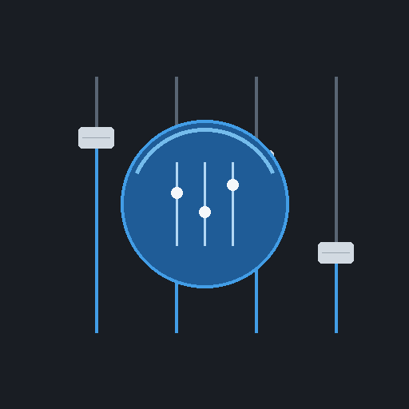
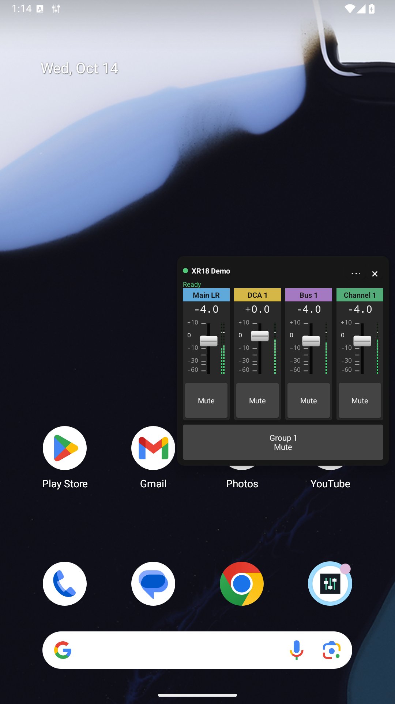
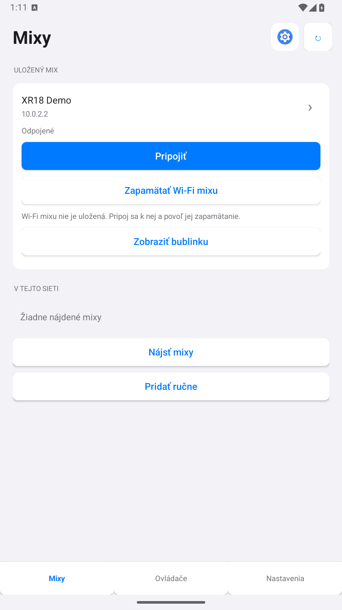
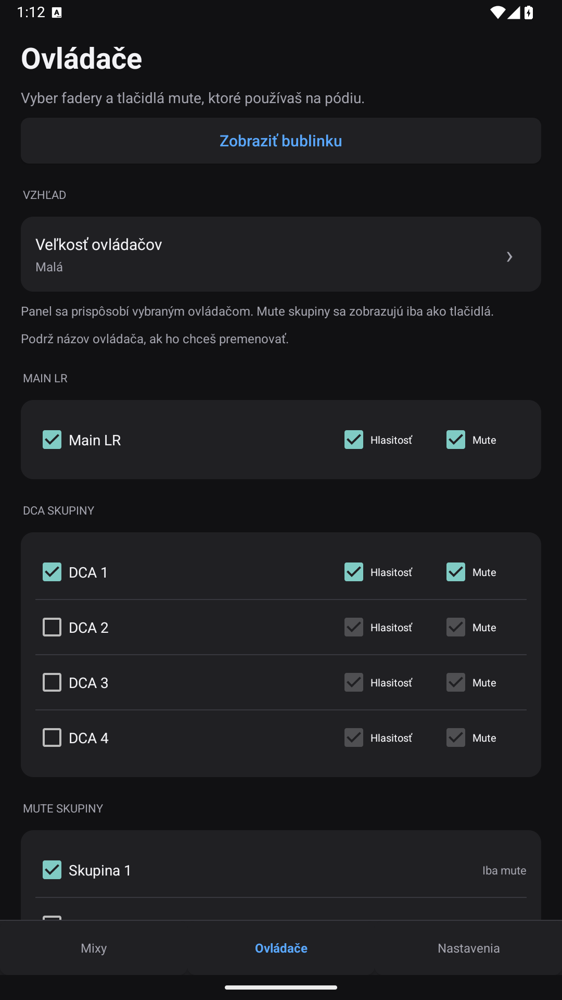
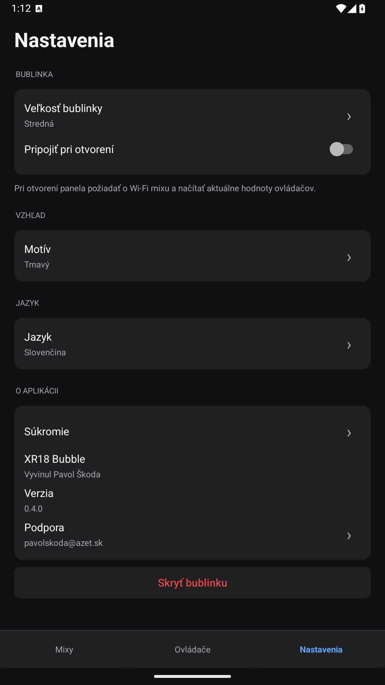

Podľa teba
Vyber master, DCA, kanály, zbernice alebo mute skupiny. Samotné mute tlačidlo zostane malé; fader pridáš tam, kde ho potrebuješ.

XR18 BubbleAndroid 10+ · Bezplatná beta
Upraviť DCA. Stlmiť skupinu. Maj potrebné ovládače v malej bublinke, ktorú otvoríš nad aplikáciou, ktorú práve používaš.
Verzia 0.4.0 · Verejná beta

Vyber master, DCA, kanály, zbernice alebo mute skupiny. Samotné mute tlačidlo zostane malé; fader pridáš tam, kde ho potrebuješ.
Aktuálne hodnoty faderov a mute, živé merače signálu a jasný stav spojenia. Ovládače sa sprístupnia po načítaní hodnôt.
Po overenom spojení uloží Wi-Fi mixu. Pri otvorení panelu požiada o pripojenie a po hraní ponúkne návrat.
Pozri sa bližšie
Vyber mix, zaškrtni ovládače a nastav si vzhľad. Panel sa prispôsobí tomu, čo v ňom potrebuješ.

Vyhľadaj mix a ulož pripojenie. Malá skratka na aplikáciu je hneď vedľa obnovenia.

Ovládač pridáš alebo odstrániš zaškrtnutím. Vyber si hlasitosť, mute alebo oboje.

Veľkosť bublinky, vzhľad aj jazyk aplikácie nastavíš na jednej prehľadnej obrazovke.
Snímky používajú lokálny ukážkový mix. Ťuknutím otvoríš obrázok v plnej veľkosti.
Prečo som ju vytvoril
Mixing Station je výborná a univerzálna aplikácia na ovládanie mixu. Počas hrania však často potrebujem iba rýchlo upraviť DCA alebo stlmiť skupinu. Ak som na inej Wi-Fi, aj takáto drobnosť znamená prepnúť sieť, otvoriť aplikáciu, vybrať mix a nájsť správny ovládač.
Chcel som mať tých pár ovládačov v bublinke na kraji obrazovky. Z tejto bežnej situácie vznikol XR18 Bubble. Keď potrebujem celý mix, do Mixing Station sa vrátim jedným ťuknutím na skratku.
Navrhnuté pre Behringer XR18/X18 a Midas MR18. Bezplatná beta pre Android, dostupná cez GitHub.